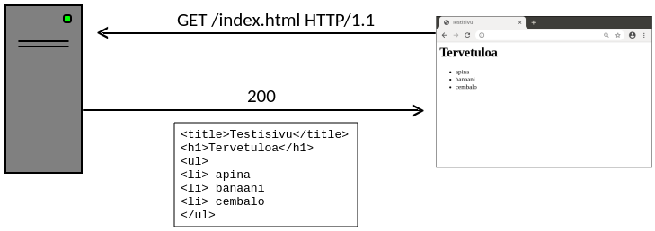
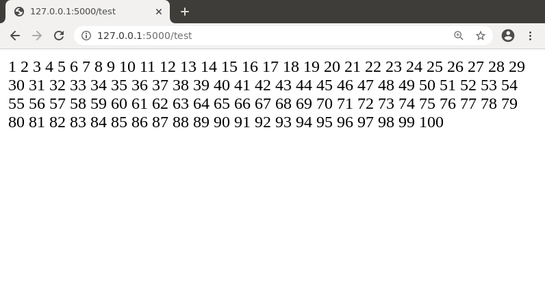
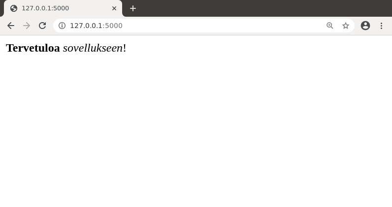
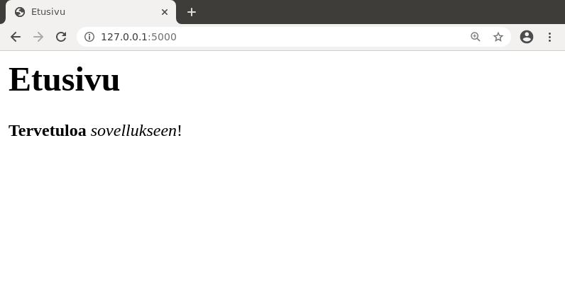
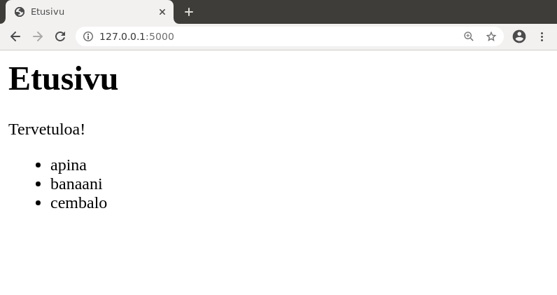
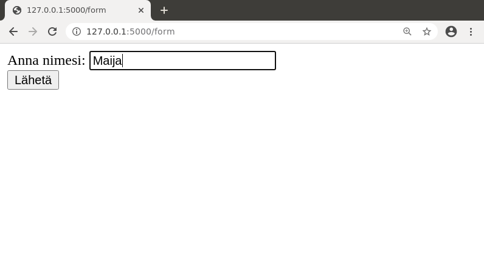
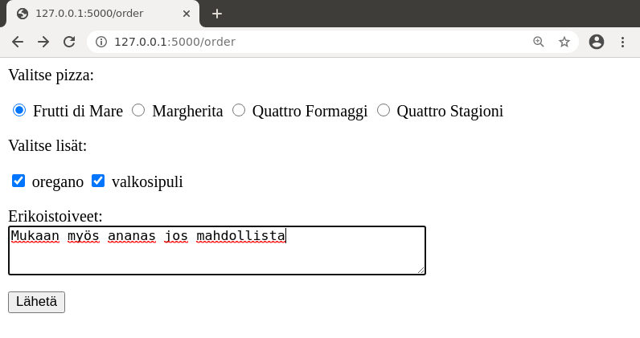
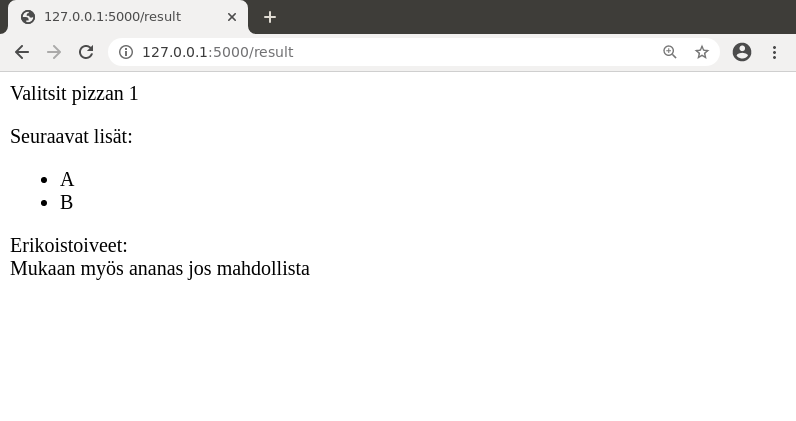
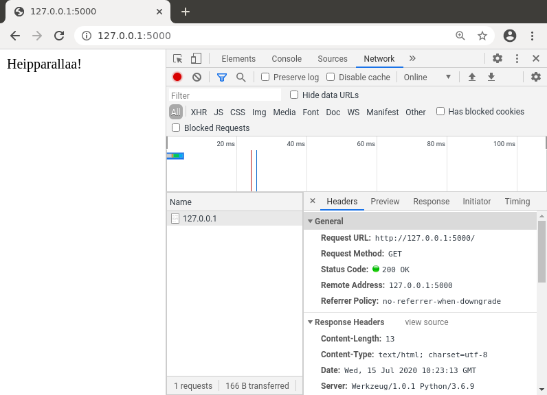
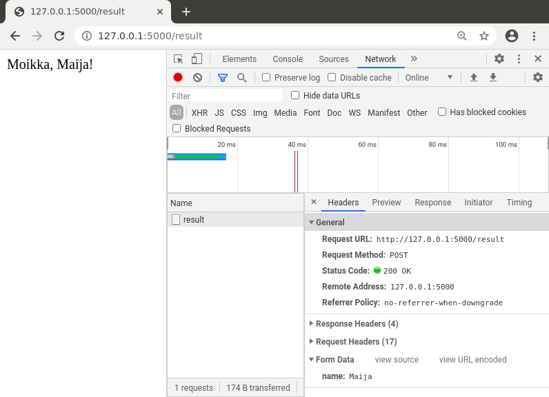

Osa 1
Toteutamme kurssilla web-sovelluksen Python-kielellä Flask-kirjastolla, johon tutustumme tässä osassa. Flask on suosittu kevyt kirjasto, joka soveltuu sekä web-ohjelmoinnin opetteluun että todellisten sovellusten alustaksi.
Kurssin materiaali olettaa, että osaat perusasiat Python-kielestä. Jos Python on sinulle uusi kieli, ei hätää, koska se on helppo kieli ja voit oppia sen kurssin aikana. Kurssin taustamateriaalissa on Python-opas, joka antaa yleiskuvan kielestä.
Kurssin materiaali on kirjoitettu Linux-käyttäjän näkökulmasta, mutta voit käyttää muutakin käyttöjärjestelmää materiaalia soveltaen. Jos käytät Windowsia, sinun kannattaa asentaa Windows Subsystem for Linux. Löydät ohjeita asentamiseen Tietokone työvälineenä -kurssilta.
Johdatus web-sovelluksiin
Web-sovellusten toiminta perustuu HTTP-protokollaan, jossa selain lähettää palvelimelle pyyntöjä ja palvelin vastaa pyyntöihin. Selain voi pyytää palvelimelta esimerkiksi HTML-tiedoston, joka kuvaa nettisivun sisällön, ja näyttää sivun sitten käyttäjälle.
Esimerkiksi seuraavassa kuvassa selain pyytää HTML-tiedostoa index.html. Palvelin lähettää tiedoston sisällön HTTP-koodilla 200, mikä tarkoittaa, että pyyntö onnistui.

Perinteinen tapa toteuttaa nettisivusto on luoda HTML-tiedostot käsin ja sijoittaa ne palvelimella olevaan hakemistoon. Tämän rajoituksena on kuitenkin, että palvelimella olevat sivut ovat staattisia eli aina kun käyttäjä lataa tietyn sivun, se näyttää samalta.
Tällä kurssilla opimme toteuttamaan web-sovelluksia, jotka luovat dynaamisia sivuja tietokannan sisällön perusteella ja tallentavat käyttäjien antamaa tietoa tietokantaan. Tämä antaa valtavasti lisää mahdollisuuksia verrattuna staattisiin sivuihin.
Ensimmäinen web-sovellus
Aloitamme ensimmäisen web-sovelluksen tekemisen luomalla sovellusta varten hakemiston sovellus ja siirtymällä sinne:
$ mkdir sovellus
$ cd sovellus
Jotta voimme kätevästi hallinnoida sovelluksen tarvitsemia kirjastoja, luomme hakemistoon Pythonin virtuaaliympäristön seuraavalla komennolla:
$ python3 -m venv venv
Tämä komento luo hakemiston venv, jonka sisällä on Pythonin suoritusympäristö sovellusta varten. Saamme virtuaaliympäristön käyntiin suorittamalla aktivointikomennon näin:
$ source venv/bin/activate
Tämän seurauksena komentorivin alkuun ilmestyy tunnus (venv) merkkinä siitä, että olemme virtuaaliympäristössä.
Kun olemme virtuaaliympäristössä, voimme asentaa Python-kirjastoja paikallisesti niin, että ne ovat käytettävissä vain kyseisessä virtuaaliympäristössä emmekä tarvitse asennukseen pääkäyttäjän oikeuksia. Asennamme ensin flask-kirjaston:
(venv) $ pip install flask
Nyt meillä on pystyssä ympäristö, jossa voimme suorittaa web-sovelluksen. Tehdään testiksi yksinkertainen sovellus tiedostoon app.py:
from flask import Flask
app = Flask(__name__)
@app.route("/")
def index():
return "Heipparallaa!"
Sovelluksen ideana on, että se näyttää tekstin “Heipparallaa!”, kun käyttäjä menee sovelluksen etusivulle. Saamme sovelluksen käyntiin näin:
(venv) $ flask run
* Environment: production
WARNING: This is a development server. Do not use it in a production deployment.
Use a production WSGI server instead.
* Debug mode: off
* Running on http://127.0.0.1:5000/ (Press CTRL+C to quit)
Viimeisellä rivillä näkyy osoite, jonka kautta voimme käyttää sovellusta nettiselaimella. Kun menemme sivulle http://127.0.0.1:5000/, näemme sovelluksen:
Sovellus sulkeutuu painamalla Control+C komentorivillä, jolloin voimme tehdä jotain muuta komentorivillä tai käynnistää sovelluksen uudestaan.
Komento deactivate lopettaa virtuaaliympäristön käyttämisen ja palauttaa komentorivin takaisin tavalliseen tilaan:
(venv) $ deactivate
$
Huomaa, että sovellusta ei voi käynnistää tavalliselta komentoriviltä, koska Flask-kirjasto on asennettu vain virtuaaliympäristöön. Voimme käynnistää sovelluksen vain virtuaaliympäristössä, minkä tunnistaa siitä, että rivin alussa lukee (venv).
Sivupyynnöt
Flask-kirjaston ideana on, että määrittelemme ohjelmassa funktioita, jotka käsittelevät sivupyyntöjä. Ennen funktion määrittelyä oleva dekoraattori @app.route ilmaisee, mikä on sivun osoite. Funktio palauttaa merkkijonon, jossa on sivun sisältö.
Esimerkiksi voisimme laajentaa sovellusta niin, että siinä on kolme sivua:
@app.route("/")
def index():
return "Heipparallaa!"
@app.route("/page1")
def page1():
return "Tämä on sivu 1"
@app.route("/page2")
def page2():
return "Tämä on sivu 2"
Tässä sovelluksessa on etusivu, kuten ennenkin, sekä kaksi muuta sivua, joiden osoitteet ovat page1 ja page2. Uudet sivut näyttävät tältä:
Huomaa, että sivun osoite ja funktion nimi ovat kaksi eri asiaa. Sivun osoite annetaan dekoraattorissa, jonka jälkeen tulee sivupyynnön käsittelevä funktio, jolla voi olla muu nimi. Kuitenkin usein toimiva käytäntö on, että sivun osoite ja funktion nimi ovat samat, kuten yllä olevassa koodissa page1 ja page2.
Koska sivun sisältö luodaan Pythonilla, voimme käyttää sivun luomisessa mitä tahansa ohjelmoinnin keinoja. Esimerkiksi seuraava funktio tuottaa sivun, jossa on luvut 1–100:
@app.route("/test")
def test():
content = ""
for i in range(100):
content += str(i + 1) + " "
return content
Funktion tuloksena on seuraava sivu:

Voimme myös määritellä sivun osoitteen niin, että siinä on parametri. Esimerkiksi seuraava funktio käsittelee sivuja, joiden osoitteessa on int-tyyppinen parametri id:
@app.route("/page/<int:id>")
def page(id):
return "Tämä on sivu " + str(id)
Sivun osoitteessa annettu parametri välittyy funktiolle, joka voi käyttää sitä haluamallaan tavalla sivun luomisessa. Tässä tapauksessa funktio näyttää sivulla viestin “Tämä on sivu id”, eli esimerkiksi osoitteessa page/123 oleva sivu näyttää tältä:
HTML ja sivupohjat
Tähän mennessä olemme tuottaneet sivuja, joissa on pelkkää tekstiä, mutta tarkemmin ottaen voimme käyttää sivuilla HTML-koodia. HTML on kieli, jolla määritellään nettisivun sisältö. Kurssin taustamateriaalissa on HTML-opas, joka käsittelee HTML:n perusteet.
Esimerkiksi seuraava sivu käyttää HTML-komentoja:
@app.route("/")
def index():
return "<b>Tervetuloa</b> <i>sovellukseen</i>!"
Tässä tapauksessa sana “Tervetuloa” näkyy lihavoituna ja sana “sovellukseen” näkyy kursivoituna:

Periaatteessa voisimme luoda sovelluksen sivujen HTML:n suoraan funktioissa, mutta tämä olisi vaivalloista, kun sivulla on enemmän sisältöä. Parempi tapa on määritellä sivupohjia, joita funktiot käyttävät. Sivupohjat tallennetaan templates-hakemistoon.
Luodaan testiksi sivupohja index.html:
<title>Etusivu</title>
<h1>Etusivu</h1>
<b>Tervetuloa</b> <i>sovellukseen</i>!
Tämän jälkeen saamme näytettyä sivupohjan sisällön etusivulla näin:
from flask import Flask
from flask import render_template
app = Flask(__name__)
@app.route("/")
def index():
return render_template("index.html")
Funktio render_template lukee sivupohjan annetusta tiedostosta ja palauttaa sen sivun sisältönä. Jotta funktiota voi käyttää, se tulee ottaa mukaan import-rivillä. Flask-kirjastossa on monia muitakin funktioita ja olioita, joihin tutustumme pikkuhiljaa materiaalissa.
Yllä oleva esimerkki tuottaa seuraavan sivun:

Flask käyttää sivujen luomisessa Jinja-sivupohjia, minkä avulla sivun osaksi voi välittää tietoa Python-koodista. Seuraava esimerkki antaa näytteen asiasta:
<title>Etusivu</title>
<h1>Etusivu</h1>
<p>{{ message }}</p>
<ul>
{% for item in items %}
<li> {{ item }}
{% endfor %}
</ul>
Tässä sivun osaksi tulee parametrin message määrittämä viesti sekä listan items alkiot HTML-listana. Voimme kutsua sivupohjaa vaikkapa näin:
@app.route("/")
def index():
words = ["apina", "banaani", "cembalo"]
return render_template("index.html", message="Tervetuloa!", items=words)
Tämän seurauksena sivu näyttää tältä:

Staattiset tiedostot
Staattiset tiedostot ovat sivuston osana olevia tiedostoja, joita ei luoda ohjelmallisesti. Tavallisia staattisia tiedostoja ovat sivustolla olevat kuvat.
Flaskissa suositeltu paikka sijoittaa staattiset tiedostot on hakemisto static. Esimerkiksi seuraava HTML-koodi näyttää hakemistossa olevan kuvan kuva.png:
<img src="/static/kuva.png">
Huomaa, että tiedoston polun alussa on merkki /, mikä tarkoittaa, että tiedostoon viitataan sovelluksen hakemiston juuresta alkaen. Tämä on hyvä tapa toteuttaa viittaus niin, että se toimii luotettavasti sovelluksen eri sivuilla.
Lomakkeiden käsittely
Lomake on HTML-sivun osa, jonka kautta käyttäjä pystyy lähettämään tietoa sovellukselle.
Tehdään ensimmäisenä esimerkkinä lomake, joka kysyy käyttäjältä nimeä. Määrittelemme lomakkeen seuraavasti sivupohjassa form.html:
<form action="/result" method="POST">
Anna nimesi:
<input type="text" name="name">
<br>
<input type="submit" value="Lähetä">
</form>
Tämä lomake lähettää tietoa sivulle result metodilla POST. Lomakkeessa on tekstikenttä, jonka nimi on name, sekä lähetysnappi.
Tarkoituksena on, että kun käyttäjä lähettää lomakkeen, hän siirtyy toiselle sivulle, joka näyttää viestin nimen perusteella. Tässä on sivupohja result.html tätä sivua varten:
Moikka, {{ name }}!
Seuraava sovellus toteuttaa sivupohjien avulla sivut form ja result:
from flask import Flask
from flask import render_template, request
app = Flask(__name__)
@app.route("/form")
def form():
return render_template("form.html")
@app.route("/result", methods=["POST"])
def result():
return render_template("result.html", name=request.form["name"])
Sivu result ottaa vastaan POST-metodilla lähetetyn lomakkeen, mikä näkyy dekoraattorin parametrissa methods. Lomakkeen kautta lähetetty tieto on saatavilla olion request kautta. Koska lomakkeen tekstikentän nimi on name, siihen viitataan request.form["name"].
Lomakkeen käyttäminen voi näyttää tältä:

Metodi POST on yleisin tapa lomakkeen lähettämiseen, ja se soveltuu useimpiin tilanteisiin. Toinen tavallinen metodi on GET, johon palaamme myöhemmin.
Lomakkeen elementit
Tavallisia lomakkeen elementtejä ovat tekstikentät ja valintaruudut. Jokainen elementti määritellään tietyllä tavalla HTML-koodissa ja sen kautta lähetettyyn tietoon pääsee käsiksi tietyllä tavalla request-olion kautta.
Tehdään seuraavaksi esimerkki, jossa käyttäjä voi tilata pizzan. Sivupohja order.html näyttää tilaukseen liittyvät valinnat:
<form action="/result" method="POST">
Valitse pizza:
<p>
<input type="radio" name="pizza" value="1"> Frutti di Mare
<input type="radio" name="pizza" value="2"> Margherita
<input type="radio" name="pizza" value="3"> Quattro Formaggi
<input type="radio" name="pizza" value="4"> Quattro Stagioni
<p>
Valitse lisät:
<p>
<input type="checkbox" name="extra" value="A"> oregano
<input type="checkbox" name="extra" value="B"> valkosipuli
<p>
Erikoistoiveet: <br>
<textarea name="message" rows="3" cols="50"></textarea>
<p>
<input type="submit" value="Lähetä">
</form>
Elementtien radio ja checkbox erona on, että samannimisistä elementeistä vain yksi radio voi olla valittuna mutta yksi tai useampi checkbox voi olla valittuna.
Sivupohja result.html näyttää tilauksen tiedot lähetyksen jälkeen:
Valitsit pizzan {{ pizza }}
<p>
Seuraavat lisät:
<ul>
{% for extra in extras %}
<li> {{ extra }}
{% endfor %}
</ul>
Erikoistoiveet: <br>
{{ message }}
Seuraava sovellus käsittelee lomakkeen kautta lähetetyt tiedot:
from flask import Flask
from flask import render_template, request
app = Flask(__name__)
@app.route("/order")
def order():
return render_template("order.html")
@app.route("/result", methods=["POST"])
def result():
pizza = request.form["pizza"]
extras = request.form.getlist("extra")
message = request.form["message"]
return render_template("result.html", pizza=pizza,
extras=extras,
message=message)
Koska extra-nimen alla voi olla useita valintoja, ne haetaan listana getlist-metodilla.
Lomakkeen käyttäminen voi näyttää tältä:


Sovelluksen toiminta
Selain ja palvelin
Nyt kun meillä on perustiedot web-sovelluksen tekemisestä, on hyvä hetki katsoa vähän tarkemmin, mitä tapahtuu, kun sovellusta käytetään selaimessa. Tarkastellaan ensin yksinkertaista sovellusta, joka näyttää tekstin etusivulla:
from flask import Flask
app = Flask(__name__)
@app.route("/")
def index():
return "Heipparallaa!"
Selaimissa on kehittäjän työkaluja, joiden avulla voi tarkastella selaimen ja palvelimen välistä liikennettä. Esimerkiksi Chromessa painamalla F12 avautuu kehittäjän näkymä. Välilehti Network näyttää, miten selain viestii palvelimen kanssa:

Tässä selain lähetti palvelimelle HTTP-pyynnön, jonka osoite on http://127.0.0.1:5000/ ja metodi on GET. Palvelin vastasi tähän koodilla 200, jonka merkitys on OK eli pyyntö onnistui. Palvelin lähetti vastauksena 13 tavua tietoa eli tekstin “Heipparallaa!”. Samaan aikaan sovellus tulosti komentoikkunaan rivin tietoa pyynnöstä:
127.0.0.1 - - [15/Jul/2020 13:23:13] "GET / HTTP/1.1" 200 -
Tarkastellaan sitten toista tilannetta, jossa lomake lähettää tietoa sivulle result:
<form action="/result" method="POST">
Nimi: <input type="text" name="name">
<br>
<input type="submit" value="Lähetä">
</form>
Nyt sivupyyntö näyttää tältä:

Tässä tapauksessa metodi on POST ja käyttäjän lomakkeeseen kirjoittama tieto (tässä kentän name arvo) kulkee sivupyynnön mukana. Selain ei näytä tätä suoraan käyttäjälle, mutta asian pystyy havaitsemaan kehittäjän näkymästä.
Sovelluksen toiminta
Kun Flask-sovellus käynnistetään komennolla flask run, sovellus suorittaa ensin alkutoimet ja jää sitten odottamaan käsiteltäviä sivupyyntöjä. Sovellus käsittelee jokaisen sivupyynnön omassa säikeessään erillään muista.
Huomaa, että jotkin asiat sovelluksessa ovat yhteisiä kaikille sivupyynnöille ja jotkin taas ovat sivupyyntökohtaisia. Esimerkiksi seuraavassa koodissa muuttuja value on globaali, joten muuttuja saa satunnaisen arvon sovelluksen käynnistyessä ja tämän jälkeen sama muuttujan arvo näkyy aina etusivun latautuessa.
value = randint(1, 100)
@app.route("/")
def index():
return "Satunnainen luku: " + str(value)
Seuraavassa koodissa puolestaan muuttuja value saa arvon paikallisesti sivupyynnön yhteydessä ja etusivun latautuessa näkyy vaihtuva satunnainen luku:
@app.route("/")
def index():
value = randint(1, 100)
return "Satunnainen luku: " + str(value)
Jotkin Flaskin sisäiset oliot näyttävät globaaleilta mutta ovat todellisuudessa sivupyyntökohtaisia. Esimerkki tästä on olio request, joka sisältää sivupyynnön tietoja. Tämän olion kautta voi hakea esimerkiksi lomakkeen kautta lähetetyn kentän sisällön:
@app.route("/result", methods=["POST"])
def result():
name = request.form["name"]
...
Vaikka oliota request voidaan käyttää globaalin muuttujan tavoin, se on kuitenkin sivupyyntökohtainen. Jos näin ei olisi, eri sivupyyntöjen tiedot menisivät sekaisin. Esimerkiksi yllä oleva koodi toimii, koska olion request kautta saadaan nimenomaan kyseiseen sivupyyntöön liittyvä käyttäjän nimi.